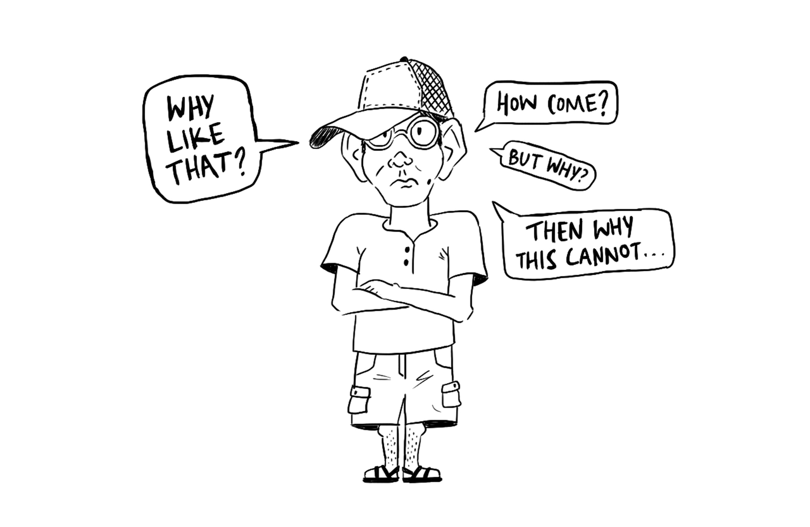
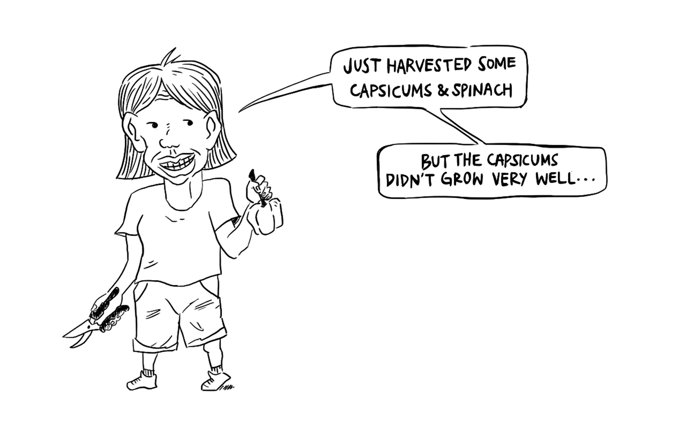
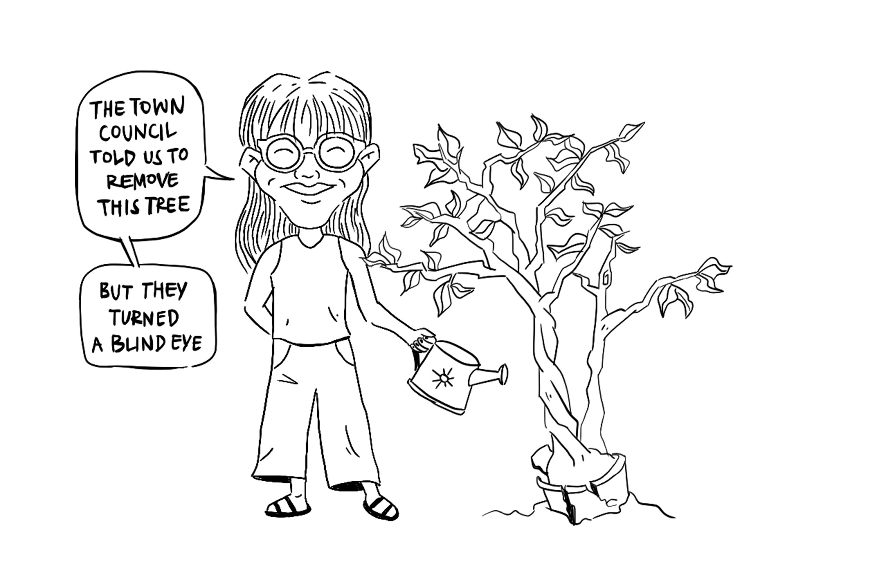

Generations of Singaporeans grew up in a rural setting and were living off the land up till the 1960s. Thereafter, the Housing & Development Board (HDB) focused on rehousing majority of the population which lived in overcrowded slums and squatter settlements. The introduction of high rise buildings meant a reduction in agricultural landscape.
The NParks’ schemes of community and allotment gardens are a way to reacquaint ourselves with growing crops and cultivating the land. The following portraits provide a nuanced understanding of the relationship between people — individuals, communities and the state — and the land.
View the full digital publication here.